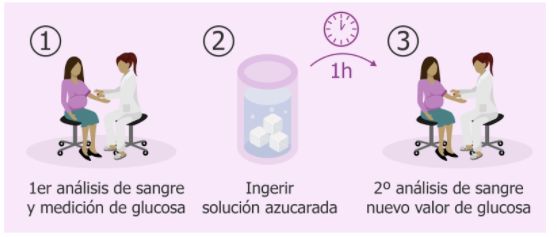

La DM es un estado de hiperglicemia crónica por una deficiencia relativa (el organismo nn hace uso de la insulina) o absoluta (el organismo no es capaz de producir la insulina) de la insulina, esto puede deberse por factores genéticos metabólicos que desarrollan los dos tipos de diabetes.
los síntomas característicos de Diabetes son la presencia de polifagia (el paciente presenta mucha hambre), polidipsia ( Presenta abundante Sed) y poliuria (orina demasiadas veces); entre otros síntomas podemos encontrar la visión borrosa, dolor de estómago, náuseas, pérdida de peso sin embargo, este último síntoma solo se presenta en niños con diabetes de tipo 1 debido a que su cuerpo no les permite realizar síntesis de la insulina por lo tanto la glucosa no será almacenada en el tejido adiposo ni en el tejido muscular
CLASIFICACIÓN DE LOS TIPOS DE DIABETES:
Segunda la ADA 2020 y la asociación latinoamericana de la diabetes existen 4 tipos de diabetes.
- Diabetes Tipo 1: ocasionada por la destrucción de las células beta y por la deficiencia absoluta de insulina
- Diabetes Tipo 2: ocasionada por el daño paulatino progresivo generado en un receptor
- Diabetes Tipo 3: conocida también como diabetes gestacional
- Otros tipos de Diabetes: Dentro de este grupo de diabetes podemos encontrar diabetes ocasionadas por medicamentos, pancreatitis crónica, fibrosis quística u otros casos que generan un daño a nivel de la célula beta y síntesis de la insulina no sintetizando
ETAPAS DE LA DIABETES
- Etapa normoglucemia: Esta etapa se da cuando el paciente presenta la fisiopatología pero no se manifiesta; o sea no se han exacerbado los niveles de glucosa presentando sus niveles de glucosa normales
- Etapa hiperglucemia: cuando los valores de glucemia se encuentran por encima del rango normal, se van a clasificar según los valores y si se encuentra en ayunas o no.
- Pacientes normales
- Pacientes con vallas presentan glucemias alteradas en ayuno o intolerancia a la glucosa. Estos pacientes de denominan como pre diabéticos fuera del rango (altos pero no clasifican como glucosa)
- Pacientes con valores altos que alcanzan a clasificar como glucosa
NIVELES ALTOS NO DIABETICO
son los pacientes que presentan glicemias alteradas en ayuno o intolerancia a la glucosa. Estos pacientes de denominan como pre diabéticos
DM no insulino requiriente:se realizan tratamientos diferentes, el paciente no necesita la administración de insulina
DM insulino requiriente para lograr control metabólico: no necesitan un tratamiento permanente con insulina sólo por algunos periodos para controlar el metabolismo de la glucosa
DM insulino requiriente para sobrevivir (verdadera diabete insulino-dependiente): son pacientes dependientes de la insulina de tipo 1 los cuales no son capaces de poder producir la insulina por lo tanto se le debe administrar de forma permanente
DIABETES TIPO 1
en este tipo de diabetes los pacientes pasan por varias etapas hasta llegar a no ser capaz de producir la insulina se puede generar por diferentes causas:
Puede ser ocasionada por la destrucción de las células beta la cual está mediada inmunológicamente por Ac.
- 1. Anticuerpos contra islotes
- 2. Anticuerpos contra la insulina: en este caso el cuerpo produce la insulina pero por causa de los Ac no funciona
- 3. Anticuerpos contra descarboxilasa del ácido glutámico
- 4. Anticuerpos contra fosfatasa tirosina los cuales interfieren en la secreción de insulina
según la asociación de la HLA específico la cual da un fenotipo de autoinmunidades la cual se clasifica a continuación:
-
1. DQA y DQB -
2. DR3 y DR4
Cabe resaltar que estos pacientes tienden a generar cetoacidosis metabólica cuando se encuentran descompensados.
FISIOPATOLOGIA DIABETES TIPO 1
como se mencionó ya anteriormente para poder desarrollar Diabetes de tipo 1 el paciente debe tener una predisposición genética la cual con ayuda de otro factores ambientales como en el caso de los virus generan una autoinmunidad generando el daño de los islotes permitiendo el desarrollo de esta enfermedad
ETAPAS DE LA DIABETES TIPO 1
ESTADíO 1: el paciente se encuentra en estado normoglucémico en donde va a presentar una autoinmunidad sin embargo no alcanza a desarrollar una hiperglicemia; los exámenes del paciente se encuentran los niveles normales por lo tanto no presentando síntomas por otro lado cuando se miden los Ac estos se encontraran altos.
ESTADíO 2: se genera cuando el paciente tiene una regulación alterada, presenta la disglicemia y empezará a tener uno que otro síntoma, también presentará Ac pero se ven indicios de afectación en la glucosa presentando resultados alterados en prueba de tolerancia en Hb glicosilada.
ESTADíO FINAL: Los síntomas de pacientes se salen de control presentando síntomas que cumplen todos los criterios para ser diagnosticado como paciente con diabetes de tipo 1
ETAPAS DE LA DIABETES TIPO 2
¿Qué es la diabetes tipo 2?
La diabetes tipo 2, el tipo más común de diabetes, es una enfermedad que ocurre cuando el nivel de glucosa en la sangre, también llamado azúcar en la sangre, es demasiado alto. La glucosa en la sangre es la principal fuente de energía y proviene principalmente de los alimentos que se consumen. La insulina, que es una hormona producida por el páncreas, ayuda a que la glucosa entre a las células para que se utilice como energía. En la diabetes tipo 2, el cuerpo no produce suficiente insulina o no la usa bien. Por lo tanto, se queda demasiada glucosa en la sangre y no llega lo suficiente a las células.
¿Cuáles son los síntomas de la diabetes tipo 2?
Los síntomas de la diabetes incluyen:
- aumento de la sed y de las ganas de orinar
- aumento del hambre
- sentirse cansado
- visión borrosa
- entumecimiento u hormigueo en los pies o las manos
- llagas que no sanan
- pérdida de peso sin razón aparente
Pruebas diagnósticas
La glucosa en plasma venoso es el método convencional para la medición y la notificación de la diabetes mellitus. Sin embargo, dado el uso generalizado del muestreo capilar, particularmente en los entornos de escasos recursos, se proporcionan los niveles de glucosa en plasma capilar después de una carga oral de glucosa. Los valores de glucosa en plasma venoso y capilar en ayunas son idénticos. La glucosa debe medirse inmediatamente después de obtenerse la muestra; de lo contrario, la muestra debe recogerse en un tubo con inhibidores de la glucólisis, centrifugarse al momento para separar el plasma y congelarse hasta el momento del análisis. • En las personas asintomáticas, se debe repetir el análisis para confirmar el diagnóstico, de preferencia con la misma prueba, tan pronto como sea factible en un día posterior.
• Si la glucosa plasmática es de ≥ 18 mmol/l (≥ 325 mg/dl) o el paciente tiene síntomas, se deben medir las cetonas urinarias para evaluar el grado de trastorno metabólico.
• Si no es posible medir la glucosa plasmática, puede usarse una prueba de glucosa en orina para confirmar la presunción de diabetes en las personas sintomáticas. Una prueba de orina negativa no descarta la diabetes, pero sí la hiperglucemia grave
Tratamiento de la diabetes
La diabetes de tipo 2 es una enfermedad progresiva, en la cual la secreción de insulina disminuye con el transcurso del tiempo. A menudo hará falta introducir los hipoglucemiantes orales en los pacientes tratados con medidas de cambios en la alimentación e indicación de actividad física. También puede ser necesario intensificar el tratamiento con insulina conforme avance la enfermedad y los hipoglucemiantes orales ya no sean suficientes para controlar la glucemia.
Manejo no farmacológico
La alimentación saludable a fin de lograr o mantener un peso corporal normal y la actividad física regular son la piedra angular del tratamiento de la diabetes.
• Debe recomendarse a las personas con diabetes que sigan un régimen alimentario saludable y equilibrado, similar al que se aconseja a la población general.
• Debe recomendarse a los pacientes con sobrepeso que reduzcan su ingestión alimentaria calórica para bajar de peso.
• Debe recomendarse a todos los pacientes que practiquen diariamente actividad física regular apropiada a su condición física (por ejemplo, caminar). La mayoría de los adultos deben realizar al menos 150 minutos de actividad aeróbica de intensidad moderada o enérgica por semana, distribuidos en un mínimo de 3 días.
• Debe recomendarse a todos los pacientes que no consuman tabaco y eviten el consumo nocivo de alcohol.
Manejo farmacológico
Control de los niveles de glucosa en la sangre (glucemia) Tratamiento inicial:
• La metformina no causa aumento de peso ni hipoglucemia y es el tratamiento inicial recomendado para las personas que no logran el control deseado de la glucemia con la alimentación y la actividad física. La dosificación debe aumentarse gradualmente según el protocolo para la diabetes.
• Puede usarse una sulfonilurea de segunda generación (de preferencia, la gliclazida) como tratamiento inicial o de primera línea cuando esté contraindicada la metformina o no se la tolere. Las sulfonilureas pueden causar aumento de peso e hipoglucemia.
• No se ha demostrado que otros fármacos sean mejores que la metformina o las sulfonilureas como tratamiento inicial en cuanto al control de la glucemia y los resultados a largo plazo.
DIABETES TIPO III: GESTACIONAL
La diabetes gestacional es la presencia de glucemia alta durante el embarazo en mujeres que antes de la gestación no tenían diabetes (en la mayoría de los casos después del parto vuelve a sus límites normales). Esto es debido a que las hormonas presentes durante el embarazo pueden dificultar el trabajo que realiza la insulina apareciendo una alteración en el metabolismo de los HC(hidratos de carbono) y por ello la glucosa se eleva (hiperglucemia). La diabetes gestacional puede conllevar complicaciones como macrosomías (niños excesivamente grandes) y complicaciones en el nacimiento, por lo que es importante controlar los niveles de azúcar. Estas hipotéticas complicaciones se pueden presentar con niveles de glucosa que fuera de la gestación serían considerados normales.
SÍNTOMAS:
Generalmente no presenta síntomas o muy leves como tener más sed de lo normal y orinar con mucha más frecuencia.
DIAGNÓSTICO:
Es necesario descartar diabetes gestacional en el primer trimestre de embarazo en mujeres con factores de riesgo, como haber presentado diabetes gestacional en un embarazo anterior, abortos de repeticion, tener antecedentes familiares de diabetes o situaciones que se asocian con resistencia a la insulina (hipertensión, hiperlipemia, obesidad, ovarios polimicroquísticos, acantosis nigricans). En los demás casos, la prueba para descartar diabetes gestacional debe practicarse entre las semanas 24 y 28 de embarazo. El procedimiento es:
Se dan 50 gramos de glucosa (test de O´Sullivan), se mide la glucemia a la hora y, si se está por encima de 139 mg/dl, se realiza una curva de 3 horas: se dan 100 gramos de glucosa y se mide la glucemia antes, a la hora, a las dos y a las tres horas de la administración: si se tienen dos o más valores iguales o superiores a 95, 180, 155 y 140 mg/dl (a las 0, 1, 2 y 3 horas, respectivamente, criterios de Carpenter y Coustan) se diagnostica de diabetes gestacional.
FACTORES DE RIESGO
Algunas mujeres tienen un mayor riesgo de diabetes gestacional. Los factores de riesgo de la diabetes gestacional incluyen los siguientes:
Sobrepeso y obesidad.
Falta de actividad física.
Diabetes gestacional previa o prediabetes.
Síndrome de ovario poliquístico.
Diabetes en un familiar inmediato.
Parto previo de un bebé con un peso de más de 9 libras (4,1 kilos).
Raza: las mujeres negras, hispanas, indígenas estadounidenses y asiático-estadounidenses tienen un mayor riesgo de desarrollar diabetes gestacional.
COMPLICACIONES: bebé
1.Sobrepeso al nacer: Un nivel de glucosa sanguínea más alto de lo normal en las madres puede hacer que los bebés crezcan demasiado. Los bebés muy grandes - los que pesan 9 libras o más - tienen más probabilidades de quedar encajados en el canal de parto, tener lesiones de nacimiento o necesitar un parto por cesárea.
2. Nacimiento temprano (prematuro) Un nivel alto de glucosa sanguínea puede aumentar el riesgo de que las mujeres entren en trabajo de parto y den a luz antes de la fecha prevista. O se puede recomendar un parto temprano porque el bebé es grande.
3. Dificultades respiratorias gravesLos bebés que nacen prematuramente de madres con diabetes gestacional pueden experimentar el síndrome de dificultad respiratoria, una afección que dificulta la respiración.
4. Bajo nivel de glucosa sanguínea (hipoglucemia)A veces, los bebés de madres con diabetes gestacional tienen un nivel bajo de glucosa sanguínea (hipoglucemia) poco después del nacimiento. Los episodios graves de hipoglucemia pueden causar convulsiones en el bebé. La alimentación a horario y, a veces, una solución de glucosa intravenosa pueden hacer que el nivel de glucosa sanguínea del bebé vuelva a la normalidad.
5. La obesidad y la diabetes tipo 2 más tarde en la vidaLos bebés de madres con diabetes gestacional tienen un mayor riesgo de padecer obesidad y diabetes tipo 2 en el futuro.
6. Muerte fetal intraúteroLa diabetes gestacional sin tratar puede provocar la muerte del bebé antes o poco después del nacimiento.